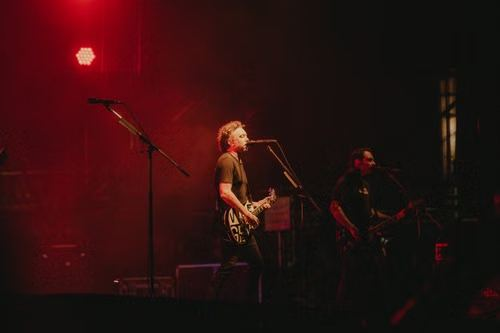

Part 3: In this part, I'm going to ask you to compare two pictures, and I will then ask you two questions about them. You will have 45 seconds for each response.
1. Tell me what you can see in these two pictures.

The two pictures show people (playing music) in different places
In the first picture, I can see 3 people, a man, a woman, and a child. I think they are a family. They are playing the piano together at home. The father is using a laptop. The mother is kissing the child on her forehead. (The mother is looking at the child). They are wearing casual clothes. The look happy. I think they are enjoying their time.
In the second picture, I can see two people in a live concert. They are playing music/performing on the stage. A man is playing the guitar and the other is singing. The stage is dark with a red light. I think many people are listening to them.